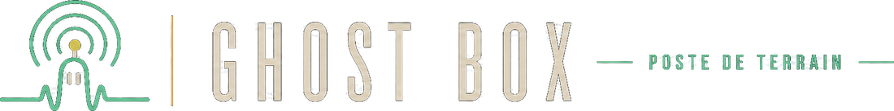

Les outils sont rangés par moment : ce qu'on fait pendant la séance, et ce qu'on en fait après. Tout reste sur l'appareil, sauf la transcription du dernier outil. Si tu ouvres l'application pour la première fois, commence par le mode d'emploi.
Un écran, un bouton. L'appareil allume tout ce que le téléphone possède, apprend le lieu et attend. Aucun réglage à comprendre.
→ pour commencer, ou quand on veut juste poser le téléphone et voirJusqu'à quatre caméras à la fois, composées dans une seule image, avec le son de la box. Détection de personne sur chaque vue, cadre du mouvement, mur de mots à côté de l'image.
Incrustation du lieu, de l'heure et des mots dans la vidéo — ou image brute, au choix. Mémoire tampon : les secondes d'avant ton geste sont gardées. Écran fixe pour poser le téléphone.
→ que tu explores un lieu à la perche ou que tu poses le téléphone dans une pièceLes capteurs de l'appareil sondés en direct. Un mot ne sort que si une mesure dépasse tout ce que le bruit du lieu sait produire.
Seuil auto-calibré, coïncidence entre capteurs, mode témoin à l'aveugle, trace exportable. Le mur de mots peut y montrer le vocabulaire pendant toute la veille.
→ pour laisser l'appareil en veille, sans rien toucherLe vocabulaire entier, montré : cinq colonnes qui tombent dans le noir. Écran tourné vers la pièce, et tous les capteurs de l'appareil en écoute — micro, mouvement, champ magnétique, caméra.
Deux manières de désigner un mot. Instant simple : un événement, un mot — l'instant est vrai, mais le mot reste un tirage. Escalier : trois événements pour un mot — la famille, puis la page, puis le mot — cibles assez larges pour être visées, et aucun seuil baissé. Séquence interrompue, rien n'est écrit.
→ pour laisser une place à ce qui voudrait s'exprimer, sans rien inventerLa même chaîne que le reste — capteur, valeur brute, index, glyphe — mais la sortie est une lettre désignée dans l'espace, une à la fois, avec un déplacement qu'on peut regarder venir.
Chaque capteur est éprouvé sur sa finesse avant d'avoir le droit de désigner : sur beaucoup de téléphones, l'accéléromètre est quantifié et retomberait toujours sur la même lettre — il est alors écarté, et l'écran le dit. Même plancher que les mots (6,5 σ), coïncidence exigée sur deux voies, garde d'entrée le temps que le lieu soit appris. Mesuré : zéro lettre sur 300 h de bruit simulé.
→ téléphone posé à plat, doigts sur l'écran, pour une longue veilleTout ce qui a été gardé, de n'importe quel mode : vidéos, photos instantanées, prises venues de la mémoire tampon. Relecture avec le journal de séance, envoi vers les téléchargements du téléphone, suppression.
→ pour revoir, trier, faire de la placeMicro sans traitement, spectrogramme, marqueurs, détection de pics. Relecture avec boucle, rognage, filtres réglables. Export WAV.
→ pour capter et réécouter le son de la box radioPartager l'application par QR code, vérifier que le hors-ligne est prêt avant de partir, voir l'état de l'appareil, remettre les préférences à neuf.
→ avant de partir sur le terrain, ou pour équiper un autre téléphoneTout ce que fait l'appareil, expliqué en entier : chaque mode, comment le seuil est appris, ce qu'un mot veut dire et ce qu'il ne veut pas dire, comment conduire une séance, où vont les enregistrements.
→ à lire une fois posément ; il fonctionne aussi sans réseauUn dispositif capteur → mot fabrique les mots : le vocabulaire vient de la table, la grammaire des gabarits, le sens de la personne qui lit. Le capteur ne fournit qu'un nombre. C'est pour ça que chaque émission conserve sa valeur brute et son index, et que le banc propose un mode témoin. Détail dans docs/capteurs-et-lexique.md.